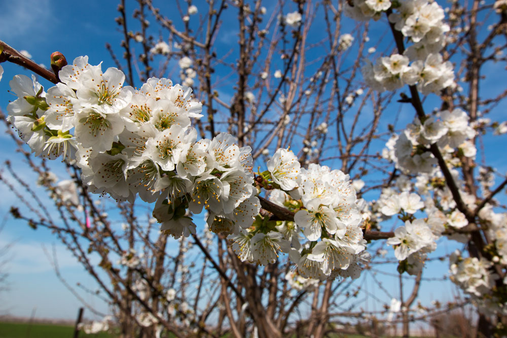

Climate California
Stories from the front lines in the battle against climate change.
"If you try to pick anything out in nature you find it hitched to everything else in the universe."
—John Muir
In this past year, drought parched the state, wildfire ripped through massive swaths of forest, and crops in the Central Valley suffered in a warmer winter.
All the while, the sea continues to rise, compromising California’s iconic coastlines.
For California in all its natural diversity, this past year has been a portent of the effects of climate change.
Often spoken of in the future tense, climate change is happening now, according to the 2014 National Climate Assessment released by the federal government in May. The report links global warming over the last 50 years with human activities, including the burning of fossil fuels and the greenhouse gas emissions they produce.
Ironically, California leads the nation with its environmental standards and emissions regulations, but stands to lose in the short term. Combating greenhouse gases will require a level of international cooperation that is probably a long ways away.
In the meantime, scientists, scholars and government officials up and down the state are starting to take measures that reduce the impacts of climate change at local levels. Adaptation doesn’t require large-scale governmental support, and can serve as a test case for larger projects that build a more resilient California.
“California is setting the agenda for the rest of the country to follow,” said Norman Miller, a UC Berkeley climate scientist and member of the Intergovernmental Panel on Climate Change. “These things take time to propagate across the country.”
This story is about those efforts – stretching already thin water resources, breeding plants that thrive in warmer weather, allowing smaller fires to prevent catastrophic wildfires and building natural barriers against surging seas.
HEAT, DROUGHT, CLIMATE CHANGE
As California experiences its worst drought on record, the state takes a new look at conservation.
C
alifornia may have grown up on a faulty assumption: the water we expect every year will always come.
About 35 percent of California’s water comes from the snowpack in the Sierra Nevada mountains. In the winter a blanket of snow accumulates then gradually melts in the spring and summer, supplying the Central Valley and the rest of the state with water.
But in 2013, one of California’s driest years on record, the warm winter meant more of that snow fell as rain in the mountains. With a snowpack level below 20 percent of normal statewide, the mountains didn’t store that water – it ran right through to the streams.
"So you can kind of look at the snowpack as a temporary reservoir," said Randall Osterhuber, a researcher at the Central Sierra Snow Lab, a unit of UC Berkeley.
Scientists expect droughts will become more common as the planet warms. That raises the risk for wildfire and drying out the state’s biggest industry: agriculture.
Both this year’s drought and climate change has put a renewed focus on the frailty of California’s water supply system – and on finding ways to conserve, capture and recycle water.
“It really comes down to using the water more wisely wherever it lands," Osterhuber said. "In a state like California, conservation should be the rule all the time. Some areas of the state get a lot of precipitation, but two-thirds of the state is very dry."
Osterhuber, who keeps tabs on the snowpack from his lab west of Lake Tahoe, said the mountain snow forms the basis of California’s water delivery system.
The state relies on runoff from snowpack for water during its hot summers. From April through July, 15 million acre feet of water runs down from the mountains, delivering water to ecosystems, agriculture and hydropower dams.
When there’s less snow and earlier melting, that delivery system breaks down.
California does not typically store rainwater, and on top of that, it’s difficult to manage, Osterhuber said. That’s why the timed-release of water from snowmelt matters. Early spring runoff also poses flooding risk.
"The short sentence is: up here, we're seeing a climate that's slightly wetter and slightly warmer," Osterhuber said. "It's the warmer thing that really makes a difference in the mountains where the dominant precipitation type is snowfall."
Use the slider to compare California snowpacks in January 2013 to January 2014, when Governor Jerry Brown declared a drought emergency. (Images: NASA)
Drought in the West is a cyclic phenomenon as much as it is a symptom of climate change. The Mediterranean climate here means summers are dry and winters wet. Multi-year and multi-decade atmospheric patterns also influence how much rain the region gets.
Paleoclimatologist and UC Berkeley professor Lynn Ingram used tree rings and sediment cores from the San Francisco Bay to track dry years in the historic record. In the 1500s, Ingram noted a 200-year-long “medieval megadrought.”
“This is a natural cycle, independent of the drying we might experience with global warming. So we have to consider both those possibilities,” Ingram said at a conference on drought and climate change at UC Berkeley.
The centuries after the medieval drought were relatively wet, called the Little Ice Age.
A year of drought
- D0
Abnormally Dry - D1
Moderate Drought - D2
Severe Drought - D3
Extreme Drought - D4
Exceptional Drought
(Maps: U.S. Drought Monitor)
California’s climate varies naturally by the year, decade and century, but it’s possible that climate change is making some of those cycles worse.
Scientists at Utah State University concluded the 2013-14 drought was caused by greenhouse gas emissions in a NASA-funded study released in April. Using a new global climate computer model, Simon Wang, a Utah State associate professor of climatology, found the drought could not be explained by natural historic cycles alone.
Wind patterns over the Pacific Ocean created a high-pressure ridge, blocking rain and snow storms from blowing over California and pushing them north toward the Pacific Northwest. At the same time, the eastern part of the country experienced a deep low-pressure “trough,” Wang said, causing the massive cold snap known as the Polar Vortex.
The study called this system of high and low pressure a “dipole,” which has persisted since December 2012 and has generally intensified since the 1970s. Computer simulations showed the dipole would normally be weakening, if it weren’t for greenhouse gases. When the researchers introduced carbon emissions to the equation, they found the simulation matched real-world observations.
"It is important to note that the dipole is projected to intensify, which implies that the periodic and inevitable droughts California will experience will exhibit more severity," the study, published in the journal Geophysical Research Letters, said.
Cyclic drought
The colored areas indicate the percentage of the state affected by drought. Data: U.S. Drought Monitor
- D0
Abnormally Dry - D1
Moderate Drought - D2
Severe Drought - D3
Extreme Drought - D4
Exceptional Drought
If you drew a line on a map from San Francisco to Lake Tahoe, you’d see the challenge the state’s water system faces. About 80 percent of water runoff comes from north of that line. Yet, 66 percent of water use occurs south of the line, said Kamyar Guivetchi of the California Department of Water Resources.
People who live on the southern California coast have more than 60 percent of their water piped in from other regions. A parallel problem exists from east to west, with the San Francisco Bay Area getting a similar percentage of its water from other parts of the state, primarily the Sierra Nevada.
By the end of the century, the snowpack might be reduced by as much as 70-90 percent of what it is today century under the worst carbon emission scenarios, according to the Scripps Institute of Oceanography. The state might be getting enough precipitation, but it’s not getting enough snow. In a warmer climate, snow might occur only at higher altitudes, and scientists have observed the snow levels retreating up the slope.
“If we go back to those medieval droughts, I don’t really know what we would do. But we’re in trouble now,” Guivetchi said in a panel discussion on drought at UC Berkeley. “We are living today what we could be experiencing in the future.”
In places like Los Angeles, 89 percent of its water comes from hundreds of miles away – the Owens Valley east of the Sierra, the Colorado River or the Sacramento-Bay Delta, said Mark Gold, the associate director of the UCLA Institute of the Environment and Sustainability.
“It’s all coming from a long way. So clearly what we’re doing here has not been sustainable for decades and will not be in the future,” he said.
Gold says that can change – he and other UCLA scientists have a “crazy, but doable” goal to get the city completely self-reliant on local water sources by 2050.
In addition to good old-fashioned conservation and better water recycling – with which the region has been relatively successful with – Gold said they need to capture Southern California’s rainwater, most of which now just pours into storm drains and out, to the ocean.
In the Sun Valley north of Los Angeles there are big troughs of open soil that capture stormwater. The soil then filters the water before it enters the drinking supply.
“We need to start looking at stormwater as a supply source rather than a flood source,“ Gold said.
The UCLA scientists are just starting to develop their ideas for water self-sufficiency,and face several technology obstacles, regulatory hurdles and funding challenges.
But conservation remains the cheapest source of new water. Los Angeles residents use on average 123 gallons of water per day – the least of any city over 1 million people in the United States, Gold said. That ratio still could be better, he said.
“For every gallon that we reduce our consumption, that’s one less gallon that needs to be imported to the region,” he said. “Clearly there’s room for improvement when you look at Sydney which is 50-60 gallons per capita per day. That’s what Australia is sort of best at.”
Drought researchers Ingram and Wang agree that conservation and better use of the shrinking water supplies will be critical.
“I definitely think we need to start valuing water more,” Ingram said. “We’re in for the long-term of water scarcity and we need to think of water as a much more valuable resource than we do now.”
UP DINKEY CREEK, WITH A DRIP TORCH
In the Southern Sierra, a group works to prevent a disaster like the Rim Fire in their forest. Using fire.
There’s a serene silence in the forest, interrupted only by the occasional crackle of a burning tree. A gentle gust of wind catches the smoldering trunk and it erupts in flames. Carolyn Ballard, a United States Forest Service firefighter stands by, watching without alarm as smoke fills the canyon.
In the Sierra National Forest, this is a restorative process.
Over the course of her 30-year career, Ballard has seen the changes pile up in her section of forest in the southern Sierra, known as Dinkey Creek. The forest, she says, is “out of whack."
It’s late March and there still should be snow on the ground. Instead the ground is dry and the trees are thirsty. Freezing winters should kill off the bugs that eat the forest alive. Instead, they’re getting two influxes of bugs a year, Ballard said.
“We don’t notice ‘climate change,’ but we do notice warmer and drier winters and less snowpack,” she said.
In California’s forests, climate change is intensifying the potential for severe wildfires. Combine that with a century of misguided forest fire management policy, and one spark could spell disaster for nearby homes and sensitive wildlife habitats.
But Ballard, a USFS fire and fuels specialist, believes catastrophic wildfires can be prevented using a tool the forest itself has always relied on: fire.
The Dinkey Creek Landscape Restoration Project is a science-based approach to forest management, designed to essentially build a better forest – one that’s resilient to uncharacteristically large wildfires and the ill effects of climate change.
The project area covers 154,000 acres in the southern Sierra Nevada mountains, northeast of Fresno. Part of the federally funded Collaborative Forest Landscape Restoration program, the Dinkey Creek project brings together scientists, Forest Service officials, conservationists, Native American groups, landowners and the 4-Wheel Drive Club of Fresno to guide the restoration. They’re collectively known as the Dinkey Collaborative.
The collaborative embraces the notion of fire as a natural process in the forests. Fires can be ecologically beneficial if conditions are right.
Using prescribed burning and some manual thinning of the smaller trees and underbrush, the restoration project effectively stops large fires before they start by clearing the forest of fuel for fire.
These forest management initiatives have taken on a new sense of urgency as climate change has increased the conditions for catastrophic wildfires. With less snow in the mountains and rising temperatures at higher elevations, the soil begins to dry up along with the trees and underbrush in the forest.
"Six or seven years ago, climate change wasn't really on anyone's radar,” said Malcolm North, a research ecologist with the United States Department of Agriculture. “Now it's pretty much percolated through all the land management agencies where I've worked."
North, whose research has guided much of the restoration work in Dinkey Creek, said with high temperatures, strong winds and fuel-filled forests, wildfires are likely to increase.
Since the year 2000, California has seen 12 of its largest fires in history.
Red bars indicate fires that occurred after the year 2000 by acres burned. Note: the second largest fire, Rush, burned an additional 46,000 acres in Nevada that is not reflected in this chart. (Data: Cal Fire)
Higher temperatures and low precipitation have also led fire managers to open fire season earlier and earlier each year since the mid-20th century.
The forest didn’t always need help to regulate itself. Before California was a state, before it was settled, fire was part of the natural cycle in the forest. Sometimes, Native Americans would burn sites as they left for the winter to make it safe for them to return to later, Ballard said.
A century ago, the United States Forest Service enacted a policy of total fire suppression in a knee-jerk response to a deadly three million-acre fire at the Idaho and Montana border.
In the wake of the conflagration in 1910, William Greeley, who would later become head of the Forest Service, wrote that “fire prevention is the No. 1 job of American foresters.”
“Like the self-perpetuating cycle of hatred that can be fueled by wartime tragedies, the dogma and emotion of righteous war against fire solidified in 1910,” writes David Carle in “Introduction to Fire in California,” a 2008 guide published by the University of California Press. “Fire was the great enemy.”
Firefighters would try to extinguish blazes by 10 o’clock the day or night after the fires were discovered, an approach that became known as the “10 O’Clock Policy.”
The result is the growth of brush and smaller trees that pack the forest floor and provide fuel for catastrophic wildfire.
When people visit the forests now, some think the dense can't-walk-through-it environment is how it’s supposed to be, said Denise Tolmie, a fire management specialist for the Sierra National Forest.
But pre-settlement forests were more "park-like” – John Muir wrote the forest was so open, you could ride a horse through much of the understory. Now the land doesn’t have the water, sunshine and space to sustain that many trees and plants. The trees are so packed, they’re competing with each other.
Carle writes that the before fire suppression, the forests had less than a hundred trees per acre of forest. Now, they have hundreds to thousands per acre.
The Dinkey Collaborative’s mandate is to return the forest to more natural state, as a way of regulating itself to avoid devastating fires.
“A lot of people would say there's no way we can go back in time,” North said. “(But) those past conditions still have lessons for us to try to put the forest back into the condition where it is better able to absorb disturbances and shocks to changing climate conditions.”
Last summer’s devastating fire near Yosemite National Park reinforced the need for change in the Sierra.
On Aug. 17, 2013, a hunter’s illegal campfire sparked what became California’s second most destructive wildfire in recorded history. The Rim Fire burned more than 400 square miles of old growth forest between Stanislaus National Forest and Yosemite National Park. There was no loss of life, but eleven homes were destroyed.
Smoke from the Rim Fire seen top right in August of 2013. (Image: NASA Earth Observatory)
While the Rim fire as a single event wasn’t caused by climate change, warmer and drier conditions mean a higher chance of more frequent and more severe wildfires, said Anthony Westerling, a wildfire researcher and associate professor at UC Merced.
"The analogy I like to use for people is dice,” Westerling said. “The dice are representative of the climate system. Weather is the outcome. A roll of the die is like a weather event, and with climate change we're weighting the dice so we get more sixes and fewer ones.
"Climate change is pushing us toward more warm-dry extremes and fewer cool-wet extremes. Over time that increases the risk of large fire events."
The Rim Fire also highlighted the difference the two different forest management approaches can make.
In the 1960s, the U.S. National Park Service started to change the way it managed fire, North said. When a fire ignited in Yosemite from lightning or natural causes, the Park Service would let it burn under moderate weather conditions. As a result, the area has a relatively low load of fuel for fires.
“It’s gotten part way back – if not most of the way back – to what we think the forest used to look like historically,” North said. “And because of that when you get a wildfire that burns into those forests it generally does not kill most of the trees.”
The Stanislaus National Forest, to the park’s west, saw more damage from the Rim Fire – many will say because of the Forest Service’s fire suppression policies. But the Forest Service also has many more things to consider before letting a fire burn.
The land is more productive at a lower elevation than the national park, meaning fuels pile up more quickly, North said.
For the past several decades, the Forest Service has been easing up on fire suppression. In 2012, the service performed more than 1.2 million acres worth of prescribed fires and more than 662,000 acres of thinning by hand and machine, according to a Forest Service report in April 2014.
But in doing these burns, the Forest Service has many things to consider, including protecting peoples’ homes, air quality and the mixed-use nature of the national forest.
“When you put recreation, wildlife, timber management and fire management all in the same organization, you're going to have some bumps in the road where some of those uses conflict with each other," Tolmie said. "The agency as a whole gets asked to balance all the different things the national forests are being utilized for… sometimes it works, sometimes there's conflict in that."
Another conflict concerns habitats for sensitive species such as the spotted owl and the Pacific fisher, a kind of tree-burrowing weasel that is neither coastal nor fish-eating.
In the springtime, Pacific fisher like to make their dens inside hollow sections of oak trees. Ballard and her fire crew can’t burn known fisher territory, even if they say it needs thinning, during the fisher’s active season because the fire would cook the animals alive inside the trees. Under the Dinkey Collaborative’s direction, the fisher zones are left relatively untouched.
To run prescribed burns – “putting fire on the ground,” in Ballard’s words – the Forest Service also needs permission from the San Joaquin Valley Air Quality Board. Smoke from fires in the Sierra can drift west over populated areas, raising health concerns.
The Forest Service must either wait for the winds to blow east over the mountains where fewer people live, or pay the air quality district money to offset the impact of the smoke.
As Ballard drives through Dinkey Creek, a thin veil of smoke lingers just above the ground, scattering the sunlight among the forest’s lower boughs.
This road used to be densely overgrown, less defensible from fire, she said. But 10 years ago, a fire ran through. Now the trees that remain are farther apart, and the forest floor looks clean, with a soft green ground covering. The property owners started doing their own clearing to protect their properties the next time a fire happens.
Just down the road, the forest is again overgrown. A mess of younger trees, twisted shrubs and wood debris surrounds the tall and established pines.
“This is what a hundred years of doing nothing looks like,” Ballard said.
PRESERVING FRUIT IN A WARMER VALLEY
Rising temperatures and drought threaten the Central Valley with crop failure, unless farmers can breed tougher plants.
In his lifelong career as a pitted fruit breeder, Floyd Zaiger tried everything he could to force his trees to mutate and create new varieties of pluots, or interspecies plums.
He zapped them with cobalt radiation, fired x-rays at them and pounded the blossoms with meat tenderizer mallets to induce “mechanical” mutation.
Those attempts failed, but it turned out that natural radiation from the sun’s rays produced the mutations he needed to develop brand new varieties of the peaches, plums and cherries that earned him fame in agricultural circles.
Early on, the goal was to breed trees that bore tasty fruit. But in California’s Central Valley the rising temperatures and parched soil associated with climate change add a new sense of purpose to Floyd Zaiger’s experiments.
Climate change threatens the future of the Central Valley’s staple and cash crops – especially finicky trees that require particular temperature ranges and year-round water.
While rotating out thirstier crops for ones that require less water could solve some problems, it doesn’t help California’s $8.7 billion tree-bearing fruit and nut production industry.
Fruits and nuts are perennial crops that require a long-term commitment and water year-round to keep alive. They take years, even decades, to reach fruit-bearing maturity, so you can’t just rip them out of the ground at the end of the growing season to plant something else next year.
Tree farmers are often left with the difficult choice of cutting back or abandoning altogether their operations, or trying to cope with scarcer and more expensive water and an increasingly inhospitable climate.
That’s where Floyd Zaiger comes in.
Founded in the 1970s, Zaiger’s Genetics in Modesto uses selective breeding to produce new varieties of pitted fruits, called stone fruits. The family-run research orchard then sends the rootstocks it develops to its partner, Dave Wilson Nursery in Modesto, for commercial production. The family maintains the intellectual property rights to its creations.
These days, Floyd Zaiger is semi-retired and his daughter, Leith Gardiner, mainly runs the orchard. Gardiner has a plant sciences degree from the University of California, Davis and “a gazillion years experience” from working the family business.
On a February afternoon, she makes her rounds on a golf cart, rolling down aisle after aisle of trees, a cloud of red dust trailing behind. Her two dogs, Lucy and Trixie, follow along, weaving between trees, sometimes stopping to dig. When one gets tired, it hops up on the passenger side of the cart.
Some of the trees are starting to bloom with lavender and pink flowers. Gardiner takes note, charting when the trees bloom, which will be important to know come pollinating season.
She stops at a plum tree. Only half of its branches have blossomed, the rest is bare.
The unusually warm winter in the Central Valley this year means many fruit trees are blooming irregularly, she says. That generally means lower quality fruit.
Stone fruits and citrus trees need cold winter weather to properly grow blossoms and leaves in the spring and summer. Different types of tree require certain ranges of “winter chilling hours,” or hours when temperatures fall below 45 degrees Fahrenheit. When trees lose chilling hours, their buds might open later or be deformed. That lowers crop yields and the trees end up with fewer leaves to absorb sunlight.
In 2014, California had a mild January and February, which offset some of the cold temperatures in December.
Gardiner is on the lookout for the trees that did well in this warm and dry year to breed into future varieties. Those are the trees that will probably do well despite climate change, when warmer weather is more likely.
“Your goal is to breed things that are better than what already exists,” Gardiner said.
Varieties the Zaigers produce this year will take a decade to move into commercial production. That’s why, experts say, growers need to start planning now.
In some areasof the Central Valley, winter chilling hours have decreased by 30 percent since 1950, according to a 2009 study by researchers at UC Davis. Back then, growers could rely on 700-1200 chilling hours per winter.
Click each greenhouse gas emissions scenario to see how the number of winter chill hours are projected to decline by the end of the century.

Low emissions:
Medium emissions:
High emissions:
(Maps: Eike Luedeling and Minghua Zhang, UC Davis)
By 2050, the decline will increase to as much as 60 percent , according to the worst-case carbon emission scenarios from computer modeling the researchers used. By the end of the century, the Central Valley might not be suitable for growing walnuts, pistachios, peaches, apricots, plums and cherries anymore.
Measuring winter chill can be complicated, with different types of trees requiring different ranges of chilling hours and different models for measuring it.
But “chill is definitely reducing no matter which way you measure it,” said Katherine Pope, a UC Davis postdoctoral student who studies climate change and nut trees.
Many Central Valley crops were originally bred in southern Italy, Spain and Greece, climates similar to California’s Central Valley. In the short term, those plants might actually like the warmer climate and grow better. But after a certain point, the warmer climate will be deleterious, said Dennis Baldocchi, a UC Berkeley professor of environmental science, policy and management.
As a biometeorologist, Baldocchi measures the temperature of a plant’s buds that leaf out and form flowers. According to his latest research, the decline of winter chill could be even worse than what the computer models have projected so far. The models, he said, are based on simple weather station data that doesn’t take into account one simple factor: fog.
In California in the past “we had a lot of winter chill because we got these inversion fogs during the winter time,” Baldochhi said. “When it’s foggy, the sunlight is reflected away from the ground. It kind of caps the cold air and it stays around 35-40 degrees.”
Baldocchi, 58, grew up in the Central Valley and recalled nights playing high school soccer and not being able to see the other end of the field because of the fog. His data from Fresno and Bakersfield shows that fog increased until the 1970s, then began to decline.
What does this mean for fruit trees? Less fog means more sunlight, more sunlight means less winter chill.
And the temperature the tree actually feels may be higher than what the weather station reports. As Pope explained: If you’re lying in the grass on a sunny day in 38 degree weather, you’ll absorb the sunlight and feel different than you would if it’s 38 degrees and foggy. Same for a tree.
As this dire, less chilly projection for the Central Valley unfolds, plants can still adapt to the changing environment, and humans can speed up the process.
At Zaiger’s Genetics, workers use eye shadow brushes to hand-pollinate 2,000 barreled trees starting as early as late January each year. Then they can collect the resulting seeds, plant them and evaluate the quality of the new trees. The desirable plants will provide pollen for future varieties.
“It takes so long from taking a tree with characteristics that you want to having a variety that you can release confidently into the marketplace,” she said.
For example, say you have two almond trees. One has the gold standard consumer characteristics: the right flavor and a hard golden shell. The other isn’t as great, but it requires less winter chill.
If you pollinate one tree with the other, according to simplified Mendelian genetics, half of the resulting nuts might have the low chill requirement you want. But you must wait for the trees to mature to observe the phenotype. You might also end up with unwanted traits in some of those trees that then need to be thrown out. Repeating this process over and over, it could be many years before you finally get a tree that yields a marketable crop.
“Then it’s 2050, and all these climate change predictions are coming true and you’re barely on top of it,” Pope said.
And while plant breeding can reduce the danger of crop failure posed by warming winters, Pope said, genetics can only go so far in addressing the problem.
Water will always be at the heart of any conversation about agriculture in California. The water problem is bigger than just winter chill and plant breeding.
“We’ve improved crop yields, but not water use one iota,” Baldocchi said.
Even as a student at UC Davis, before climate change was making headlines, Baldocchi said he was told that California’s system of irrigated agriculture was not sustainable.
“In California, the story is really two fold right now. You’re seeing lack of irrigation water, which the trees need,” Baldocchi said. “And part two is the (reduced) winter chill accumulation. Fruit tree ranchers have a double whammy going against them right now.”
At Zaiger’s orchard in February, it’s spring, even though the calendar still says it’s winter. “When trees start flowering, it’s spring,” Gardiner says.
Spring triggers the blooming process, and the orchard has come alive with the pinks and purples of fruit blossoms. The trees with petals required fewer chilling hours than the still-bare trees.
In a year of heat and drought, the plants that are thriving compared to the others, Gardiner said, are the adaptable varieties.
As conditions continue to swing toward hot and dry, the industry will need to look for drought-tolerant varieties like these, she said. Some could come from breakthroughs in lab testing of genetic modifications. But others will be the product of meticulous breeding of more and more resilient plants at farms like Zaiger’s, Gardiner said.
“Everything that makes it through a year like this is a little more tolerant than its predecessors,” she said.
OYSTERS AND THE
LIVING
SHORELINE
What can a diminutive mollusk do to protect the San Francisco Bay Area from sea level rise?
T
he gray waters of San Francisco Bay slosh up on the jagged shoreline as two wetsuit-clad scientists hop down the rocks and into the mud below.
Dead oyster shells cover the rocks, crunching under each step. The tide is waning, exposing a wide mudflat sparkling under a late afternoon sun. The tide is also uncovering what could be a prototype for a fortification against one of the impacts of sea level rise.
Eight hundred feet offshore, across sticky, bubbling mud, the scientists make their way to that fortress, giving its 2 million inhabitants a checkup like doctors making a house call.
As glacial ice melts and the warming ocean expand in volume, the sea level in the Bay Area could rise 14 inches by 2050 and 55 inches by 2100, according to estimates published by the California Ocean Protection Council. From 1900 to 2000, water levels have risen 8 inches under the Golden Gate Bridge.
The resulting higher tides, combined with more frequent and stronger storms that scientists say an altered climate will bring to the area, mean powerful storm surges and increased flooding to the densely populated and expensively developed Bay Area shorelines.
More than $50 billion in property and infrastructure are in danger because of sea level rise in the Bay Area, according to the Pacific Institute and Save the Bay. At risk are almost 100 schools and healthcare facilities, 1,780 miles of roads, 270,000 homes, and infrastructure such as airports and power plants.


 Oakland-Alameda" />
Oakland-Alameda" />
The common protection would be to build a sea wall, a hard barrier between ocean and land. But scientists in the Bay Area say there’s a cheaper and more environmentally friendly alternative to adding more concrete to an already highly urbanized area:
Oysters.
Marilyn Latta of the State Coastal Conservancy, along with scientists from San Francisco State University and other organizations, came up with the San Francisco Bay Living Shorelines Project in 2012.
It’s an ambitious and innovative experiment in restoring native Olympia oyster habitat to the Bay. As a concept, living shorelines are meant to stabilize underwater environs using natural features – such as marshes and oyster reefs – in combination with minimal rock and concrete. This creates wildlife habitat and coastal protection.
In the San Francisco Bay’s version of a living shoreline, scientists submerged bundles of dead oyster shells and dome shaped structures made of cement and sand that attract larval oysters. On these artificial reefs, the oysters attach themselves for life. Nearby, the team also planted patches of eelgrass, a kind of underwater plant they believe can live symbiotically with the oysters.
By 2060, the Living Shorelines Project hopes to have planted 8,000 acres of native oyster beds in the Bay.
The project is currently in a prototype phase with two sites: one north of San Francisco near San Rafael, and the other south of Oakland near Hayward. Scientists make quarterly visits to the reefs, testing the overall health of the waters surrounding them and documenting any wildlife they see. A separate team measures the physical benefits, such as how the structures are affecting things like wave energy and sedimentation.
In the last decade, scientists have added coastal habitat restoration to their strategies for protecting coastline property and residents from sea level rise. In California, coastal habitat can include kelp and other sea grass beds, sand dunes, and marshes.
The San Francisco Bay is among the most vulnerable areas in the United States to the hazards of sea level rise, including erosion and flooding, according to a July 2013 Stanford University study published in the journal Nature Climate Change and not connected to the Living Shorelines Project.
Restoring coastal habitat – everything from mudflats and tidal marshes to the oyster reefs and sea grass - could play a big part in reducing damage from these hazards, said Katie Arkema, a senior scientist at National Capital Project, a Stanford research group studying the services nature provides to humans.
“They all kind of have a different niche, I guess you could say, in the process,” Arkema said.
Environmental groups have spent the last 30 years in the San Francisco Bay building one of the largest wetland and marsh restoration projects in the country. For decades, scientists have also known coastal wetlands serve as a protective buffer for shorelines from erosion and storm surges.
But much of the past restoration work was done without planning for sea level rise. With higher tides, the surging seas could drown and erode the existing wetlands, washing away the protections to the coast they provide.
That’s where the oyster reefs and eelgrass patches come in. The installations might be able to protect the restored marshes and wetlands from the beating of the ocean’s waves.
When a wave starts in deep water and heads ashore, it loses speed from friction against the bay floor. When the wave hits the oyster reef, it trips and doesn’t hit the marsh as hard, said Jeremy Lowe, a geomorphologist at ESA Associates, an environmental science and planning firm.
“We’re trying to manage that wave energy across the bay to our advantage,” Lowe said.
With the reefs tamping down wave energy over a long period of time, the marshes and wetlands can grow unperturbed by the ocean, Arkema said. When a large storm surge comes, it might ride right over the oyster reefs, but the larger marshes made possible by the oysters would be there to protect the shore.
The reefs and wetlands, and in some places, maybe a small levee, “they’re all doing a piece of the job,” Lowe said. “Together they could make a more flexible shoreline and one that’s more fitting of a living shoreline concept.”
If the Living Shorelines Project’s pilot experiment provides the results the team is hoping for, the concept could be applied elsewhere in the Bay to protect the homes of humans and wildlife alike.
Once believed to be an abundant presence in the San Francisco Bay, the Olympia oyster population declined significantly around the end of the 19th Century. Nobody knows exactly what brought on their disappearance, but scientists believe it was some combination of habitat destruction from Gold Rush-era hydraulic mining and overharvesting.
Now scientists, lead by biologist Katharyn Boyer of San Francisco State University’s Romberg Tiburon Center for Environmental Studies, hope their artificial reefs can aid in the population’s recovery.
On an otherwise featureless mudflat in the bay near San Rafael, the reefs stand out. Two scientists with Boyer’s lab make their way across the mud, tugging along a boogie board carrying various scientific instruments. On a late afternoon, their job is to test the water quality surrounding the experiment site using an aquarium vacuum to take samples of any critters that might be living there.
Dinosaur-like birds wade around the reefs, stalking and pecking at prey between the oysters and beds of eelgrass. Fish hide in the eelgrass, and small crabs and invertebrates take shelter between the oysters.
It’s easy to forget humans created the reefs, now dominated by nature.
To build the reefs, the Living Shorelines Project team used shucked Pacific oyster shells, bundled together in tough net-like bags. The Pacific, or Japanese oyster, is a species native to East Asia and farmed on the West Coast. They’re there to attract the larval oysters that float through the water until they find a suitable surface to which they can attach and mature. Baby oysters almost always prefer to settle onto other oyster shells, regardless of species.
As an alternative to bagged shells, the project is also testing differently shaped structures made with a mixture of bay sand and cement called “baycrete” – an eco-friendly substitute for using pure cement, Latta said.
Sketches of the different artificial reefs by the Coastal Conservancy.
Scientists fashioned baycrete reefs shaped like domes, stacks of domes, “layer cakes” (cross-sectioned domes, stacked on top of each other), and “oyster blocks” – basically castles for oysters. Each configuration has a different surface area, horizontal and vertical spaces and varying amounts of hiding places for fish and invertebrates.
In San Rafael, plots of eelgrass are interspersed with oyster reefs. One goal of the project is to see how reefs and eelgrass beds combined can help protect the shoreline from erosion, Boyer said.
Eelgrass has roots that help stabilize the sediments on the bottom of the Bay. And filter-feeding oysters can improve water clarity, helping the eelgrass to grow, Boyer said.
See how oysters and eelgrass work together to help the San Francisco Bay ecosystem. (Art: Tracey Saxby and Jane Hawkey, Integration and Application Network)
It’s been about a year since the reefs were installed at the San Rafael site. In addition to the recruitment of two million oysters, the team found that the reefs are reducing the energy of incoming waves by 30-50 percent.
The results offer some hope that a large-scale oyster habitat restoration project, along with ongoing efforts to restore Bay Area tidal marshes, could offer shoreline communities protection against floods and storm surges.
The Hayward site in the South Bay has seen less success. If one species of invasive snail isn’t outcompeting the oysters, a peskier invasive snail is eating them.
Oyster reefs and coastal habitat alone will not be able to protect every mile of shoreline in the Bay. In some places, the only practical solution might be to build some kind of sea wall.
“We're cautious about how much we can say about it at this point,” Boyer said. “I don’t want to make the oyster the hero,” Boyer said. “There are big decisions we want to make as a society on how close to the shoreline we have (development). (And) oysters and our reefs are part of a solution that everyone, scientists and managers included, will have to address.”
The Living Shoreline experiment will need to be repeated again at larger scales and in different locations around the Bay, Latta said. For example, both of the test sites sit along rocky shorelines. Until the team tests the effects of oyster reefs against a soft shoreline, like a marsh, they can’t say for sure if it will have an effect.
When the reefs were first built, someone contacted Latta wondering how oysters could possibly fix sea level rise. The caller thought oysters, since they’re filter feeders, would just suck up all the water, saving the Bay from climate change.
Mistaken as that may be, Latta says, there are no bad questions. Solving the challenges of climate change will require creative solutions.
“The more we can focus on what might be the solution and even small ways to adapt, that gives me great hope,” Latta said. “Even if it doesn’t work in the end, I want to spend my time looking for things we might do.”
About Climate California
Project by:
- Sean Greene
- UC Berkeley Graduate School of Journalism, 2014
Contact:
- seangreene [at] berkeley.edu
Advisors:
- Paul Grabowicz
- Richard Koci Hernandez
- Jeremy Rue
- Mark Schapiro
- Eric Simons